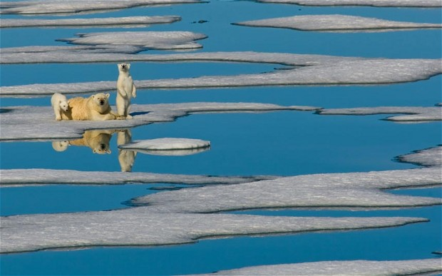
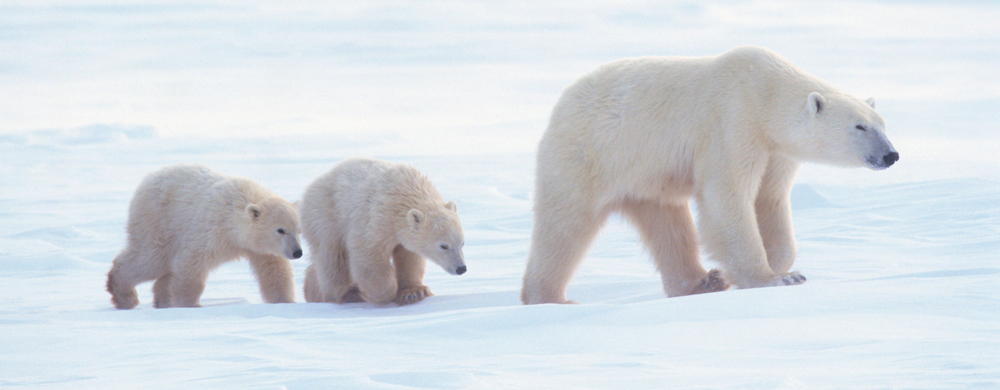

Zaštitimo naš planet!
U zadnjih stotinu godina došlo je do najvećeg zagrijavanja zemljine površine u posljednjih 1300 godina. Tako je između 1906. i 2006. godine, prosječna temperatura porasla za 0,6-0,9°C, a brzina porasta temperature se gotovo udvostručila u posljednjih 50 godina. Zbog otapanja leda, razina mora polako raste. U 20. stoljeću razina mora povisila se za 17 centimetara. Površina ledenjaka (glečera) diljem svijeta smanjuje se, baš kao i površina arktičkog ledenog pokrova (za 2,7% godišnje, od 1978. godine).
Jedan od čvrstih i specifičnih dokaza jest promjena izotopnog sastava ugljikovog(IV) oksida u atmosferi. Naime, u dijelu biosfere u kojem je brza izmjena ugljika, postoji ravnoteža između sinteze radioaktivnog ugljika-14 i ostalih, neradioaktivnih izotopa ugljika. Fosilna goriva imaju izuzetno malenu količinu 14C od živog materijala jer su milijunima godina bila zatrpana pod geološkim slojevima i u nemogućnosti izmjene tvari s ostatkom okoliša. Izgaranjem fosilnih goriva, pada koncentracija 14C u atmosferi. Sinteza ovih, te ostalih dokaza pokazuje da ne samo da postoji korelacija između njih i ponašanja
suvremenog čovjeka, nego da se radi i o kauzalnosti. U prošlosti se klima Zemlje često mijenjala, a uzroci tih promjena nisu još posve razjašnjeni. Najpoznatiji primjer globalnih klimatskih promjena su ledena doba. Posljednje ledeno doba bilo je u razdoblju pleistocena, trajalo je tisućama godina, a završilo je prije oko 13.000 godina. Za vrijeme toga ledenog doba, oko 30% zemljine površine bilo je prekriveno ledom. Poznata su i kraća razdoblja klimatskih promjena, koja su trajala samo nekoliko stoljeća ili kraće. Iz povijesnih zapisa, na primjer, znamo da je u antičko doba klima u Europi bila hladnija nego danas. Rimske su legije zimi prelazile zaleđenu rijeku Rajnu na svojim pohodima protiv Germana, a u suvremeno doba Rajna se ne zaleđuje.
Cilj naše organizacije:
Trenutno stanje:
Stanje koje želimo:
Do sad smo smo napravili...
Stanje iz 08.travanj.2013
Velike količine smoga na ulicama koje štete ljudima i prirodi.
Stanje iz 08.travanj.2019
Smanjene količine smoga i povećana kvaliteta života ljudi i prirode.